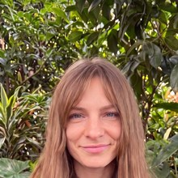
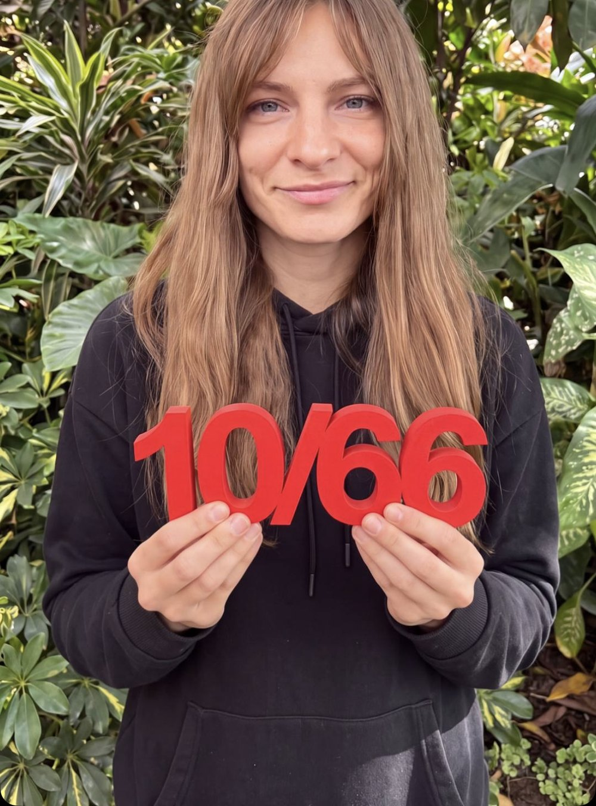
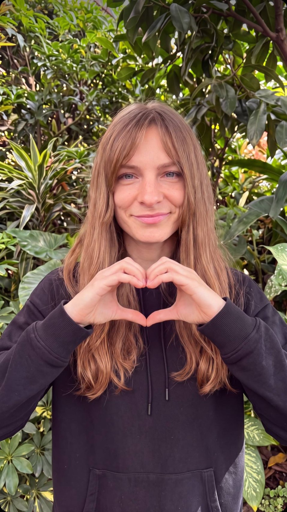

Все хотят начать новую жизнь с понедельника.
А мы возьмём и начнём.
Одно маленькое задание на 10 минут каждый день в течение 66 дней. Без насилия над собой и выгорания.

Ксения КапланВеду челлендж и иду его вместе с вами
Слон целиком не лезет.
А ложечками вполне
Мы не ставим огромных целей и не требуем героизма. Берём одно направление и каждый день отдаём ему десять минут.
Мы не пашем. Мы просто не бросаем два дня подряд.
Шесть шагов, и дальше
система работает сама
Я не обещаю, что через 66 дней у вас будет новая жизнь. Я обещаю одно: вы сделаете 66 маленьких подходов. А дальше решает повторение.
Пропустили день —
ничего не сгорело
Обычные трекеры устроены жестоко: пропустил день, счётчик обнулился, огонёк потух. И человек бросает не потому, что ленивый, а потому, что ему показали ноль там, где было восемнадцать честных дней.
Живой путь, а не картинка из рекламы: есть лёгкие дни и один честно пропущенный. Двадцать четыре дня позади, и ни один никуда не делся.
«Пропуск одной возможности выполнить действие не повлиял на процесс формирования привычки сколько-нибудь существенно»
Это вывод авторов того самого исследования, откуда взялась цифра 66.
Lally P., van Jaarsveld C. H. M., Potts H. W. W., Wardle J. «How are habits formed: Modelling habit formation in the real world».
European Journal of Social Psychology, 2010, т. 40, с. 998–1009.
doi.org/10.1002/ejsp.674
Поэтому 66 это честный ориентир, а не обещание. Единственное жёсткое правило в клубе: не пропускать два дня подряд.
Пропустил — вернулся. Это и есть вся стратегия.
Выберите свою десяточку
Слева большая цель, справа то, с чего вы начнёте в понедельник. Своё задание мы подберём вместе на старте, здесь просто чтобы увидеть принцип.
Напишите своими словами, а на старте вместе доведём формулировку до конкретной: с временем и привязкой к тому, что вы и так делаете.
66 подходов
против девяти
Честно посчитаем, потому что обычно в таких местах начинают округлять в свою пользу.
Дело не в часах. Привычку строят повторения в одном и том же контексте, а не суммарное время. Мозг любит повторения больше, чем героизм.
Кому формат
не подойдёт
Десять минут в день работают для навыков и ритуалов. Есть цели, где этот формат не поможет, и я не буду делать вид, что поможет.
Если ваша цель в этом списке, напишите всё равно. Иногда её можно переформулировать так, что десяточка начнёт работать, а иногда честнее сказать, что вам нужен не челлендж, а другой инструмент.
Большие изменения почти всегда выглядят скучно, пока идут.
Вот эти 66 дней
на настоящем календаре
Группа идёт одним календарём и стартует вместе, поэтому войти на двадцатый день нельзя. Здесь нет таймера обратного отсчёта: только даты, которые можно посчитать самому.
—
Ксения Каплан
Я не теоретик этого метода. Я прошла его на себе, и результаты оказались сильно больше, чем я рассчитывала. В третий поток иду вместе с вами, а не вместо вас.

Что я сама сделала благодаря десяточкам
Начала вести соцсети без насилия над собой. Когда-то мне было сложно выложить даже одну сторис. Сейчас в галерее пара тысяч фотографий, и навык растёт без надрыва и страха.
Поняла, что брать две десяточки разом это перебор. И стратегически неправильно. Та ошибка, от которой я теперь отговариваю всех на старте.
Встроила в жизнь планирование, хотя личная дисциплина всегда была моей больной темой.
На следующие десяточки выбираю между ведением нового канала и десятиминутной метта-медитацией. Так что мы с вами в одной лодке.
Что входит
и что от вас нужно
Что входит в участие
От вас
Можно не деньгами
Если формат откликается, а с деньгами сейчас тяжело, идём на бартер. Ваши навыки или услуги вместо оплаты. Напишите, что вы умеете, и обсудим. Это нормальный рабочий вариант, а не одолжение.
Я иду этот поток вместе с вами. У меня тоже бывают дни, когда десяточка делается через «ну ладно, хотя бы лёгкую версию». Мы не на пьедестале, мы рядом.
Старт в понедельник
Напишите мне — расскажу подробности, отвечу на вопросы и помогу выбрать десяточку, чтобы вы не взяли лишнего на старте.
Telegram @ksenia_kaplan
Или поставьте реакцию в сторис, я напишу сама
Честные ответы
Все хотят с понедельника. А мы просто возьмём и начнём
По десять минут. Без насилия над собой. Одна десяточка и уютный чат на 66 дней.
Написать КсенииЖду готовеньких пирожочков